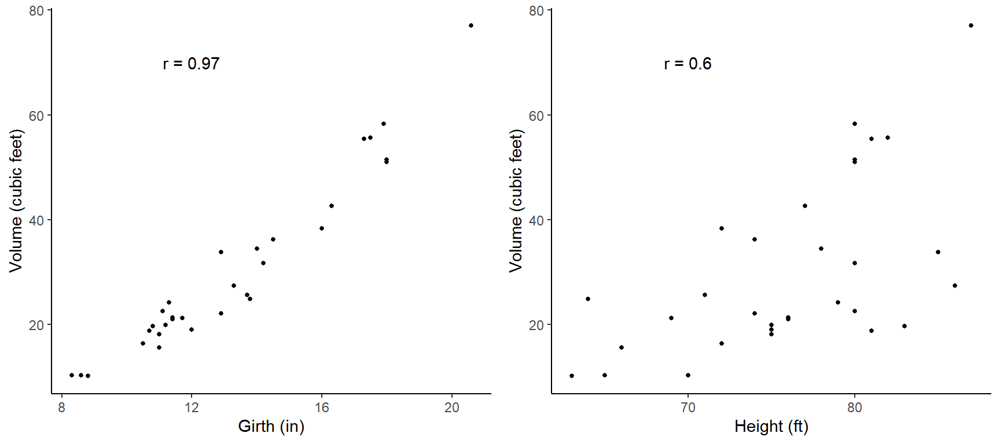
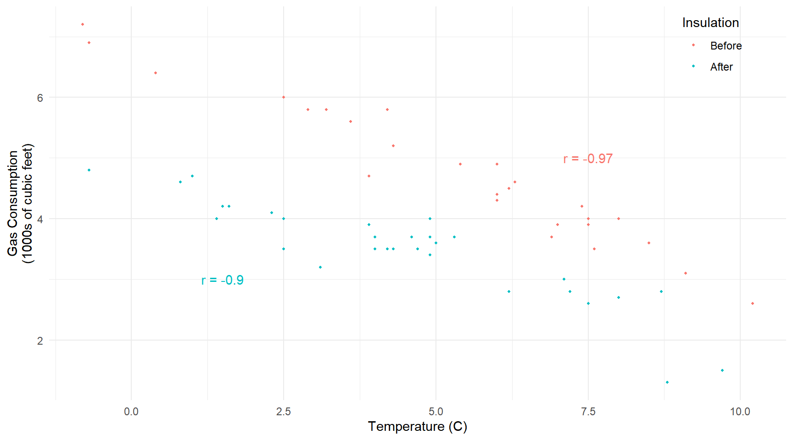
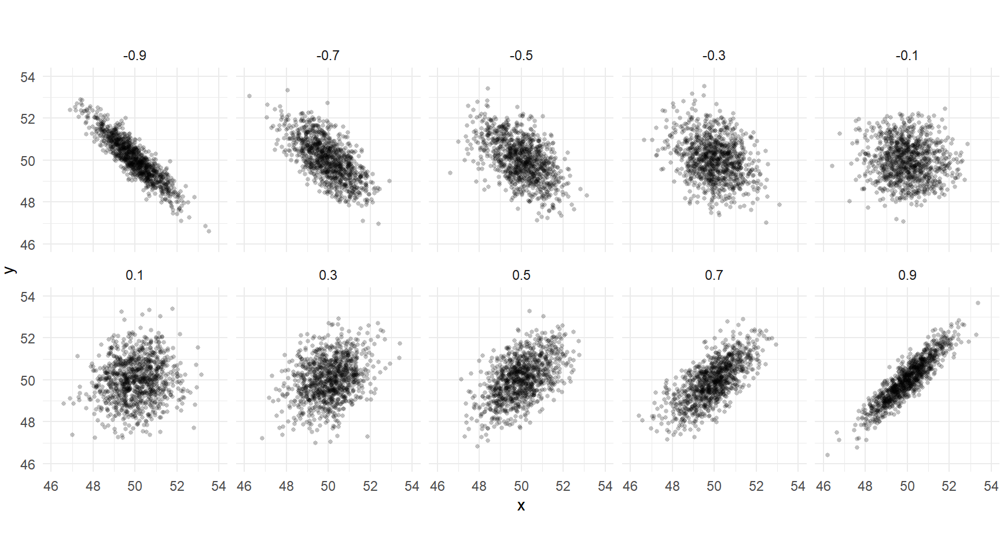
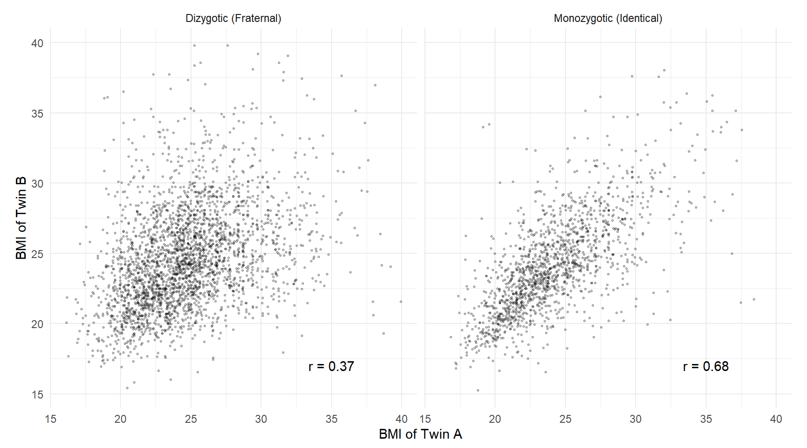
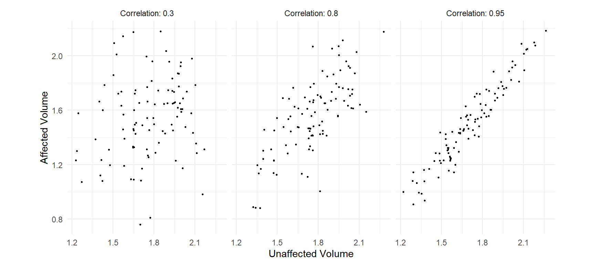
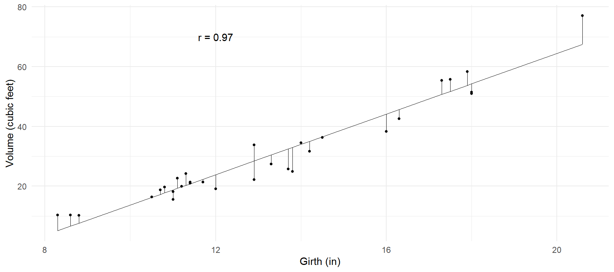

You can also download a PDF copy of this lecture.
Study Question: How is the correlation coefficient (\(r\)) related to the association between two quantitative variables?
Example: Consider a sample of 31 observations of the girth (in), height (ft), and volume (cubic feet) of black cherry trees from Allegheny National Forest.| Tree | Girth | Height | Volume |
|---|---|---|---|
| 1 | 8.3 | 70 | 10.3 |
| 2 | 8.6 | 65 | 10.3 |
| 3 | 8.8 | 63 | 10.2 |
| 4 | 10.5 | 72 | 16.4 |
| 5 | 10.7 | 81 | 18.8 |
| \(\vdots\) | \(\vdots\) | \(\vdots\) | \(\vdots\) |
| 31 | 20.6 | 87 | 77 |
The joint distribution of any two variables can be visualized using a scatter plot. 
Example: The data below record the average outdoor temperature (C) and gas consumption (1000s of cubic feet) to heat a home for a week. But note that between the 26th and 28th weeks cavity-wall insulation was added.| Week | Insulation | Temp | Gas |
|---|---|---|---|
| 1 | Before | 3.9 | 4.7 |
| 2 | Before | 7.5 | 3.9 |
| 3 | Before | 8.5 | 3.6 |
| \(\vdots\) | \(\vdots\) | \(\vdots\) | \(\vdots\) |
| 26 | Before | -0.7 | 6.9 |
| 28 | After | 9.7 | 1.5 |
| 29 | After | 0.8 | 4.6 |
| 30 | After | 2.5 | 4 |
| \(\vdots\) | \(\vdots\) | \(\vdots\) | \(\vdots\) |
| 57 | After | 8 | 2.7 |
Again a scatter plot with some color coding to indicate whether the observation was before or after insulation was added is useful. 
The correlation coefficient measures the direction and strength of the linear association between two quantitative variables. The correlation is symbolized by \(r\) when it is a statistic (i.e., describing a sample of observations) and \(\rho\) when it is a parameter (i.e., describing the population distribution of the variables). 
Example: Consider the correlations among nine test scores of seventh- and eigth-grade children.| ViP | Cub | Loz | PaC | SeC | WoM | SpA | SpC | SpD | |
|---|---|---|---|---|---|---|---|---|---|
| Visual Perception (ViP) | 1.00 | 0.33 | 0.45 | 0.34 | 0.31 | 0.32 | 0.10 | 0.31 | 0.49 |
| Cubes (Cub) | 0.33 | 1.00 | 0.42 | 0.23 | 0.16 | 0.19 | 0.07 | 0.17 | 0.25 |
| Lozenges (Loz) | 0.45 | 0.42 | 1.00 | 0.33 | 0.29 | 0.35 | 0.07 | 0.24 | 0.37 |
| Paragraph Comprehension (PaC) | 0.34 | 0.23 | 0.33 | 1.00 | 0.72 | 0.71 | 0.21 | 0.10 | 0.31 |
| Sentence Completion (SeC) | 0.31 | 0.16 | 0.29 | 0.72 | 1.00 | 0.69 | 0.25 | 0.20 | 0.36 |
| Word Meaning (WoM) | 0.32 | 0.19 | 0.35 | 0.71 | 0.69 | 1.00 | 0.18 | 0.12 | 0.27 |
| Speeded Addition (SpA) | 0.10 | 0.07 | 0.07 | 0.21 | 0.25 | 0.18 | 1.00 | 0.59 | 0.42 |
| Speeded Counting (SpC) | 0.31 | 0.17 | 0.24 | 0.10 | 0.20 | 0.12 | 0.59 | 1.00 | 0.53 |
| Speeded Discrimination (SpD) | 0.49 | 0.25 | 0.37 | 0.31 | 0.36 | 0.27 | 0.42 | 0.53 | 1.00 |
The relative strengths of such correlations have been used to study intelligence.
Example: Correlation of BMI for monozygotic (i.e., identical) and dizygotic (i.e., fraternal) twins.  Falconer’s formula of \(2(r_{mz} - r_{dz}) = 2(0.68 - 0.37) = 0.62\) has been used as a (crude) estimate of heritability.
Example: Suppose we had a matched-pairs design using genetically-related individuals (e.g., cousins, siblings, or identical twins) for a study like that that investigated the relationship between schizophrenia and left hippocampus volume.  The standard error of \(\bar{x}_d = \bar{x}_1-\bar{x}_2\) is \[ \sqrt{\frac{\sigma_1^2}{n} + \frac{\sigma_2^2}{n} - \rho\frac{2\sigma_1\sigma_2}{n}}, \] where \(\rho\) is the correlation coefficient for the population distribution.
Study Question: How does \(\rho\) affect the standard error of \(\bar{x}_d = \bar{x}_1 - \bar{x}_2\) when using dependent samples?
Study Question: How is the correlation coefficient (\(r\)) involved in using one variable to predict another using linear regression?
Example: Consider the problem of trying to predict tree volume using its girth.  Perhaps we could use an equation like \[ \hat{y} = a + bx, \] where \(\hat{y}\) is the predicted volume, and \(x\) is girth. Here \(a\) and \(b\) are the parameters of the equation known as the “intercept” and “slope” of the equation, respectively. How should we choose \(a\) and \(b\)?
The correlation is related to \(a\) and \(b\). The method of least squares can be used to choose \(a\) and \(b\) such that the \(\hat{y}\)’s and the \(y\)’s are “close” in the sense that \[ \sum (y - \hat{y})^2 = (y_1 - \hat{y}_1)^2 + (y_2 - \hat{y}_2)^2 + \cdots + (y_n - \hat{y}_n)^2 \] is as small as possible. The values of \(a\) and \(b\) that achieve this are given by \[ b = r\frac{s_y}{s_x}, \ \ \ a = \bar{y} - b\bar{x}, \] where \(s_y\) and \(s_x\) are the standard deviations of \(y\) (volume) and \(x\) (girth), respectively, and \(\bar{y}\) and \(\bar{x}\) are their means.
The correlation can also be used to compute the standard error of prediction which can be viewed as the average squared difference between \(y\) and \(\hat{y}\). This is \[ s_e = s_y\sqrt{1 - r^2}. \] So larger values of \(r\) (in absolute value) lead to smaller prediction errors (on average).